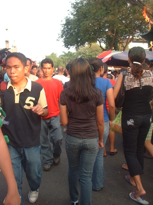

etew 
/ʔɔtɔw/
n.
“person”
n.
person; a human being (in contrast to non-human animals)
Cult. In the MS worldview, there is no word for living things. The things in the world include me etew humans, me mananap animals (not including humans), me kayu trees, and me hilamunen grasses.
Wrd.Gloss: person; people
Ka etew iyan ka minsan hentew ne due geyinawa, neuyag wey ke napatey, kumplitu se baad se lawa wey se kenè naa, wey kayi mig-ugpè te kalibutan.
Nekey nua seini ne etew?
What relation is this person to you?
Eng. person; human
Tag. táo
Ceb. táwo
Ilo.: táo
Binukid: ʔetaw
Cotabato Manobo: ʔetaw
Tasaday: ʔetaw
Tigwanon: ʔetew
WBM: ʔetew
Ilianen: ʔetew
Dibabawon: ʔetew
Sarangani: ʔotaw
Kinamigin: ʔutaw
Cagayano: ʔittaw
Proto: ʔetaw
OCM: Population (161)
DDP: Person (2), Man (2.6.5.1)
Online dict status: -
Usage level: B
adv.
(etawa, -a) what kind of people is talking about
Nekey a etawa seika?
What kind of people are you?
Eng. what kind of people
Online dict status: c
Usage level: M
vi.
for soemone (egkeetew, neetew, agent, egkA><ø-) to become a person; to be born
Engkeri niyu ka salè niyu su pekeetew kew eg-abey.
Leave aside your sins to become born again.
Wrd.Gloss: born
Eng. become a person; born
Online dict status: -
Usage level: M
n.
(pegkeetew, pegkA-) personhood
Kenè niyu amana iparibabew ka pegkeetew niyu su kenè ne meupiya sika.
Don't put your reputatin in high because that is nat good.
Eng. reputation; personhood; birth
OCM: Population (161)
DDP: Birth (2.6.3)
Online dict status: -
Usage level: M
n.
(keet-etawan, kA<>an-rdpCVC-) people
Amane e ne mareet ka keet-etawan kayi te inged te seini ne timpu.
Very worse are the people of this time.
Eng. people; crowd; congregation
OCM: Population (161)
DDP: Person (2)
Online dict status: -
Usage level: R
vi.
for a place (e.g., home) (eg-etawen, in-etew/mig-etew/pig-etew, eg-etawan, in-etawan/mig-etewan/pig-etawan, theme, eg><en-, eg><an-) to always have a lot of people visiting
Eng. lot of people
Online dict status: -
Usage level: R
1.
vi.
for someone (eg-etawen, theme, eg><en-) to take something upon themself
Kenè nu eg-etawen te egsuman-suman.
Don't take it all upon yourself. (To a mother when her daughter had disappeared.)
Data Qual: QDL doesn't know this word
Eng. take upon yourself; blame
Online dict status: -
Usage level: R
vi.
for someone (egkeetawan, neetawan, theme, egkA><an-) to be back in consciousness
Ka neetawan iyan ka nalepu wey neulian e te meupiya ne suman-suman din. Egkaayun ne tenged te dalu, gutas, beley wey minsan nekey pad ka egpuunan ne egkalepu ka etew. Ne minsan nekey degma ka egpuunan te egkeetawan ka nalepu, egkaayun ne tenged te imbusbusan te weyig, neetawan dè due te kandin, wey ke due delemetan ne inggamit.
Kahiyen ku ne kenad e egkeetawen ka malitan ne nalepu su neepuk te migtakereg te bubungan ne Lantawan.
I thought that the woman wouldn't back to consciousness painted upon climbing mount Lantawan.
Eng. back to consciousness
Ceb. naulian sa panimuot
Online dict status: -
Usage level: R
Updated by: RJH,JLM,TME,RJH,AAA,NJK,QDL,QDL,RJH
Last updated: 15/Jan/2011
"etew" in reader "Ka ngaran te me anak"
"etew" in text "Datu Gawilan Rebels against the Government"
"etew" in text "Violence at Palakpakan Fiesta"
"etew" in text "Two carabaos fighting"
"etew" in text "Aurelio's Marriage"
"etew" in text "Morning Darkness"
"etew" in text "Death of a Young Man"
"etew" in text "A Father Tells His Children about School"
"etew" in text "Proving Innocence I (When Accused of Theft)"
"etew" in text "Requesting a Loan"
"Etew" in text "Te senge kaapunan, egpanumbaley si Pidru diye te senge baley"
"Etew" in text "Te senge kaapunan, egpanumbaley si Pidru diye te senge baley"
"Etew" in text "Te senge kaapunan, egpanumbaley si Pidru diye te senge baley"
"Etew" in text "Te senge kaapunan, egpanumbaley si Pidru diye te senge baley"
"Etew" in text "Te senge kaapunan, egpanumbaley si Pidru diye te senge baley"
"Etew" in text "Te senge kaapunan, egpanumbaley si Pidru diye te senge baley"
"etew" in text "Due daruwan etew ne nekegsinug-ung diye te dalan"
"etew" in healthbook "Nekey-a ka kahew?"
"etew" in healthbook "Nekey-a ka kahew?"
"etew" in healthbook "Nekey-a ka kahew?"
"etew" in healthbook "Nekey-a ka kahew?"
"etew" in healthbook "Migpamawian ni Inuk ka sumbaley rin ne migpangaliskis"
"Neetew" in song "Mateles ne marusilem"
"neetawan" in song "Mateles ne marusilem"
"neetew" in song "Eggale-gale ka langun"
This page last updated: 19/May/2012
Copyright © 2009-2010, Matigsalug Language Christian Association, Inc